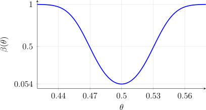

4.1 Introduction
A hypothesis test divides the parameter space \(\Omega \) into two disjoint parts, \(\Omega _0\) and \(\Omega - \Omega _0\). The null hypothesis \[H_0\colon \theta \in \Omega _0\] is usually the status quo, rejected only when there is reasonably strong evidence against it. The alternative hypothesis \[H_1\colon \theta \in \Omega - \Omega _0\] describes the departures from \(H_0\) that we want to detect. A hypothesis is simple if its set contains a single point and composite otherwise.
Since \(\theta \) is unknown, the decision is based on the data. The sample space is divided into a critical region (or rejection region) \(R\) and its complement \(R^c\), the acceptance region, and \(H_0\) is rejected in favour of \(H_1\) when the observed \(x\) falls in \(R\). Two errors are possible: a type I error is rejecting \(H_0\) when it is true, and a type II error is accepting \(H_0\) when it is false.
Definition 4.1.1. The power function of a test with critical region \(R\) is \[\beta (\theta ) = P_\theta (X\in R),\] the probability of rejecting \(H_0\), as a function of \(\theta \).
For \(\theta \in \Omega _0\), \(\beta (\theta )\) is the probability of a type I error; for \(\theta \notin \Omega _0\), \(1 - \beta (\theta )\) is the probability of a type II error. A good test has \(\beta (\theta )\) small on \(\Omega _0\) and large off it.
Definition 4.1.2. A test has level of significance \(\alpha \) if \(\beta (\theta )\le \alpha \) for all \(\theta \in \Omega _0\). Its size is \(\sup _{\theta \in \Omega _0}\beta (\theta )\).
The level is only an upper bound for the probability of a type I error, and need not be attained; the size is the smallest such bound. When \(H_0\) is simple, the size is just \(\beta (\theta _0)\).
Definition 4.1.3. For a test that rejects \(H_0\) for large values of a statistic \(T\), the \(p\)-value of the observed value \(t\) is \(\sup _{\theta \in \Omega _0}P_\theta (T\ge t)\). The test of size \(\alpha \) rejects \(H_0\) exactly when the \(p\)-value is at most \(\alpha \).
Example 4.1.4. A coin is tossed \(1000\) times and \(X\), the number of heads, is recorded. To test whether the coin is fair, consider the critical region \(R = \{x : x\le 469\ \text {or}\ x\ge 531\} = \{x : |x - 500|>30\}\). Find the size and the power function of the test.
Solution. \(X\sim \text {BIN}(1000, \theta )\) with \(\Omega = (0, 1)\). The hypotheses are \(H_0\colon \theta = \frac 12\), which is simple, and \(H_1\colon \theta \ne \frac 12\), which is composite. Using the normal approximation with continuity correction, under \(H_0\) \(X\) has mean \(500\) and variance \(250\), so the size is \[\beta \left (\tfrac 12\right ) = P(X\le 469) + P(X\ge 531) \approx 2P\left (Z\le \frac {469.5 - 500}{\sqrt {250}}\right ) = 2\Phi (-1.929) = 0.054 .\] For general \(\theta \), \[\beta (\theta )\approx \Phi \left (\frac {469.5 - 1000\theta }{\sqrt {1000\theta (1 - \theta )}}\right ) + 1 - \Phi \left (\frac {530.5 - 1000\theta }{\sqrt {1000\theta (1 - \theta )}}\right ).\] For example \(\beta (0.53) = \beta (0.47) = 0.487\) and \(\beta (0.55) = \beta (0.45) = 0.892\). The power function is drawn in figure 4.1. Since \(H_0\) is simple, the level and the size are both \(0.054\).

Questions on this section
Stuck on something here? Ask below and it stays attached to this topic.